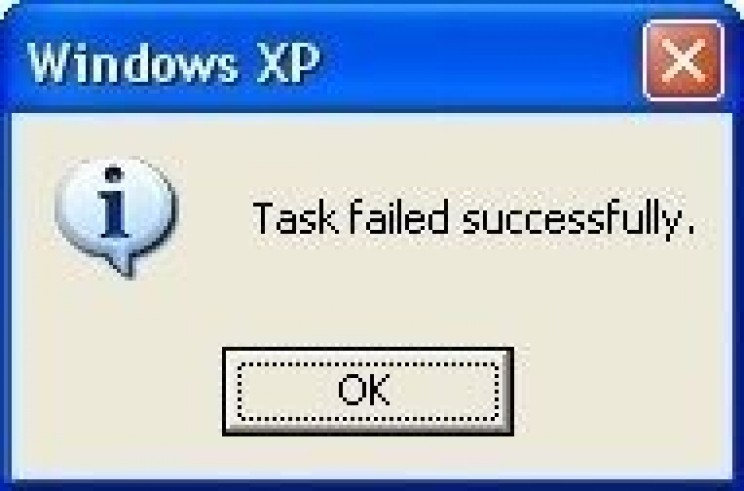

My name is Hollie Thomas. I am an aspiring software developer. I began my journey into the tech world approximately three years ago. I have completed multiple coding "boot camp" courses as well an internship at Oracle. I am excited to say that I am back at my beginning!
Back at the beginning? How could that be a good thing? Well I may be back at the start but my journey to the Amazon Apprenticeship program was a long one. I had an internship as a technical project manager that I really hated. I strayed from my path of being a developer and was miserable. After my internship I applied to approximately five jobs a day seven days a week. For you rocket surgeons out there that is 35+ jobs a week, for almost six months. This means that everyday I expected, on average, two rejection letters. If I didn't get two a day that actually meant that my resume or application had been so horrible I didn't even make it past the screening computer that auto generates rejection letters.
 My failures become my measure of success. I started getting excited about rejection letters because they meant that at the smallest level I failed good enough to warrant an official fail notice.
So, dear reader, now you may be thinking "why am I being told about failures, isn't this supposed to be about you?" My answer to that is : I could very easily tell you about my family, my husband, my boys Braeden and Oliver, my dogs, my cat, my whatever. But that does not define who I am. I want you to know that in addittion to being a wife and a mother I am first and foremost a failure. and ya know what? I am proud of it.